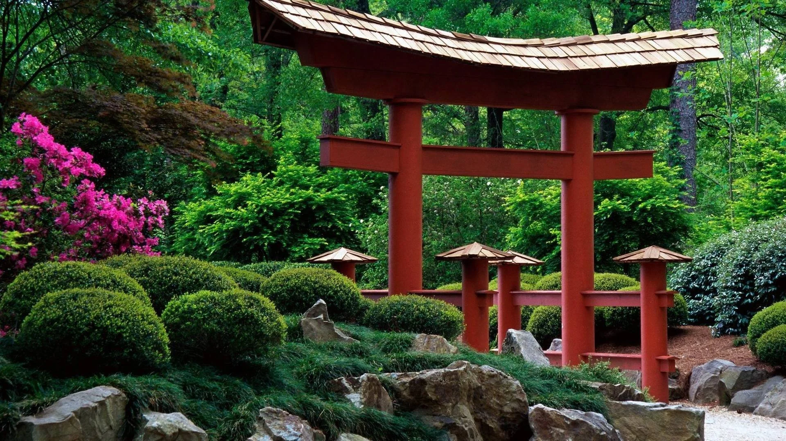
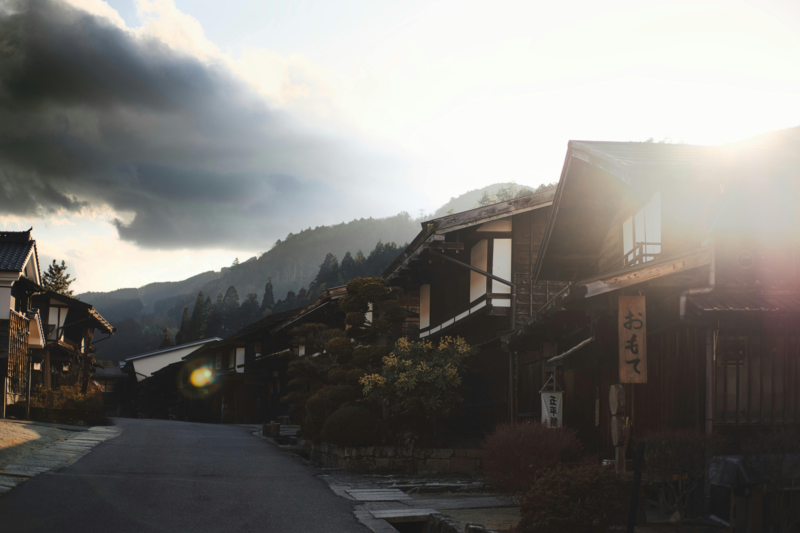
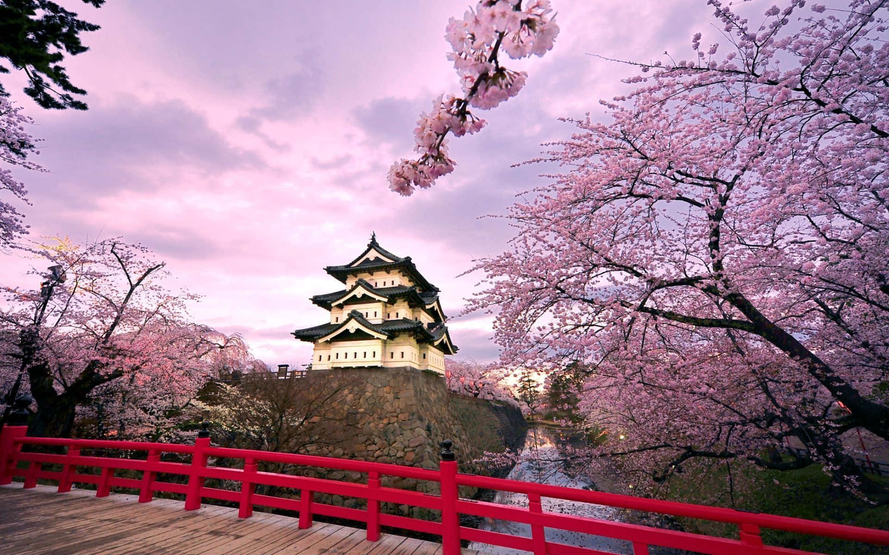
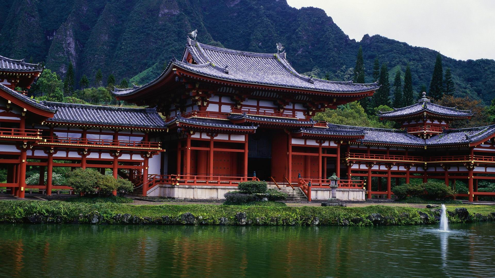
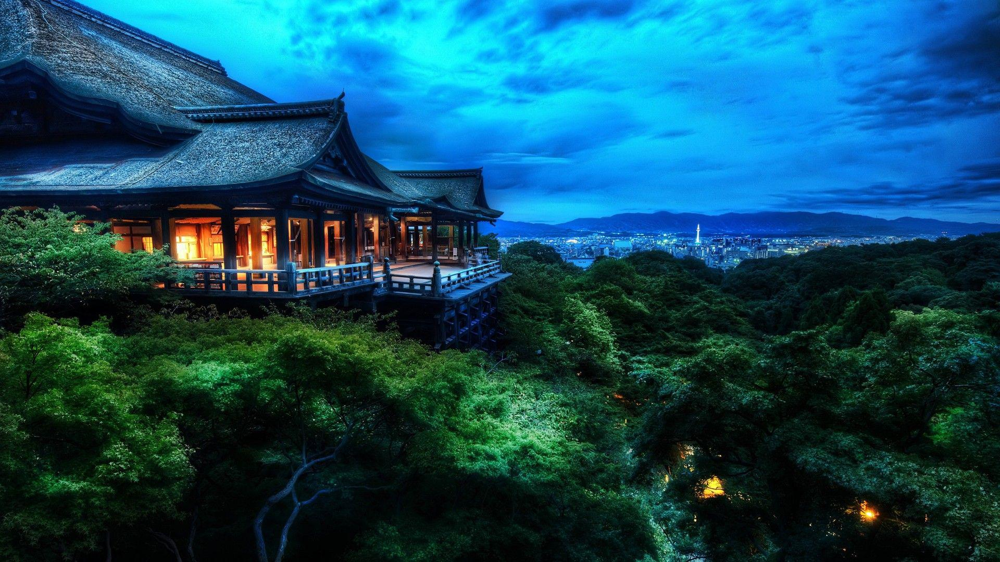
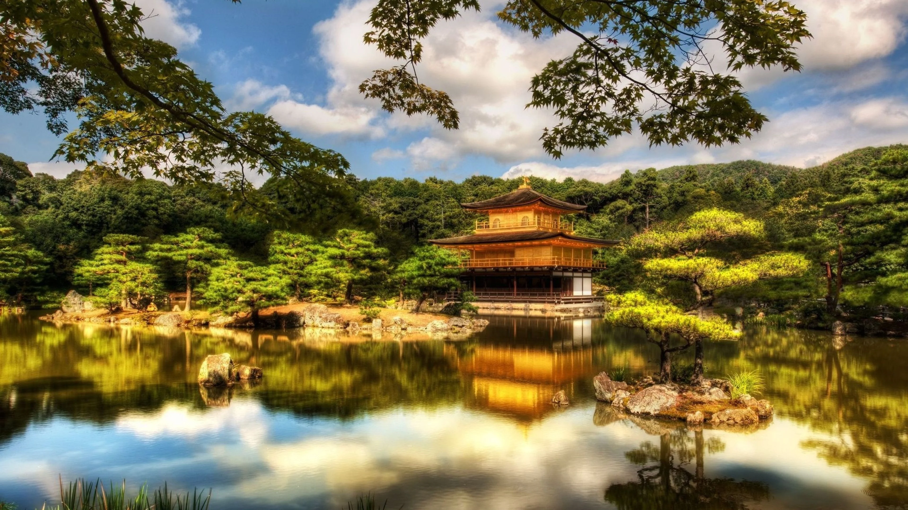
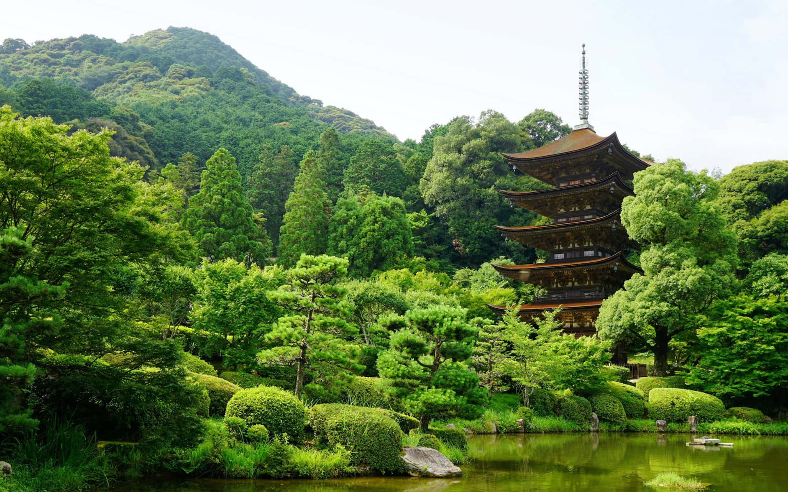
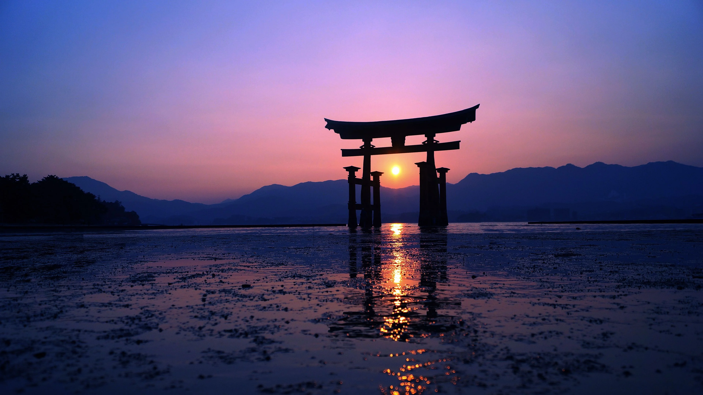
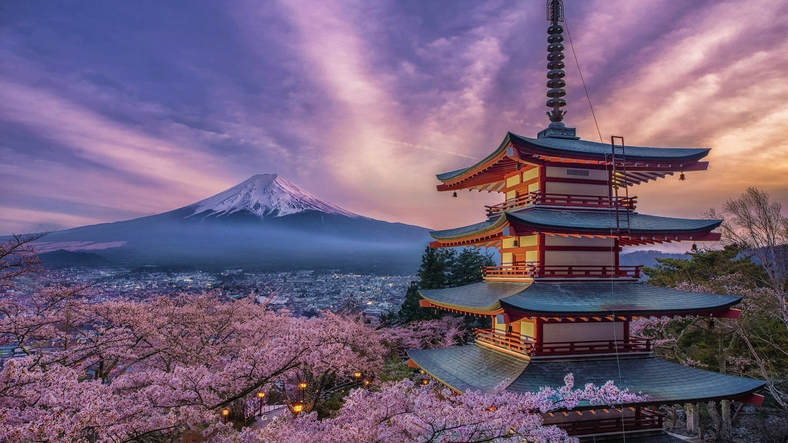

Overview
The image gallery showcases moments from across Japan, capturing landscapes, architecture, and everyday scenes that reflect the country's diversity and charm.
Image Gallery
Hover over an image below or press "Tab" on your keyboard to display here.











